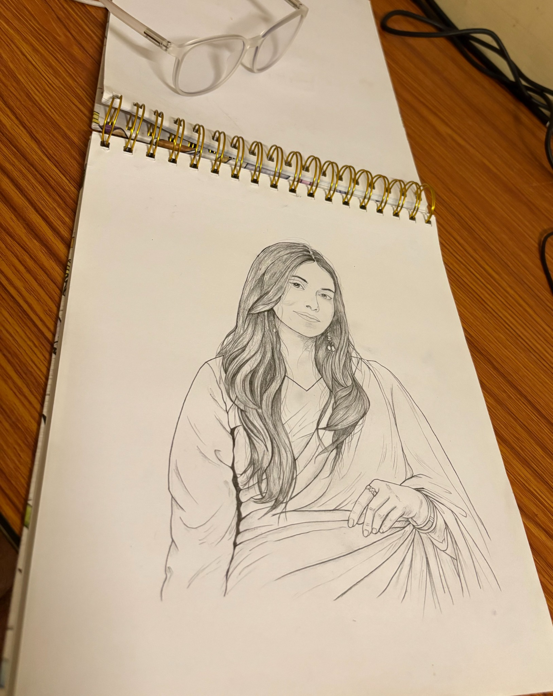
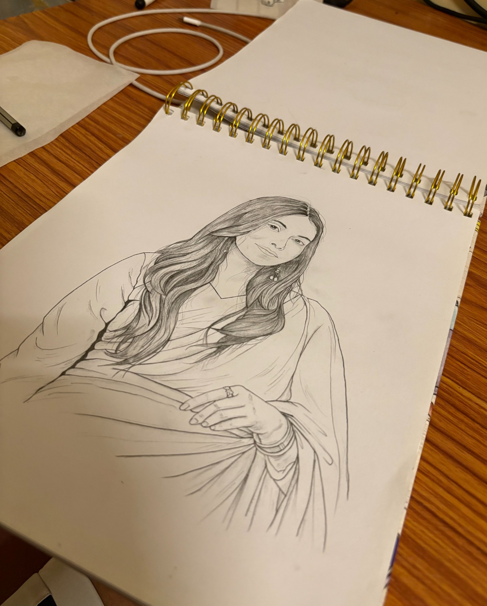

one last thing
A little something
I drew for you.
It’s been ages since I’ve drawn with an actual pencil, especially someone’s face. So sorry if it’s not as good as your great, magnificent, brilliant and exquisite face, because I just had one Nataraj pencil, and that is it. 😭

